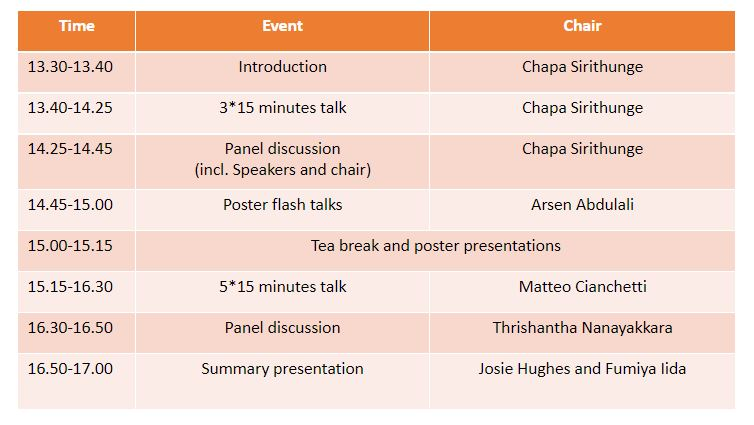
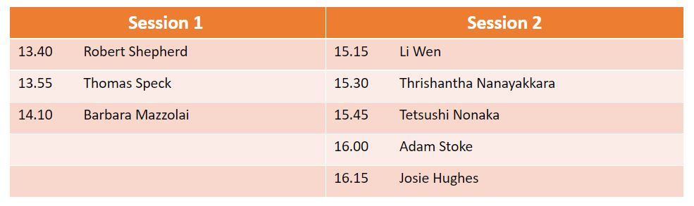

Embodied Intelligence and Soft Robotics Workshop at RoboSoft 2023
Archived project or event page. Dates and roles describe the original activity.
INTERNATIONAL CONFERENCE ON SOFT ROBOTICS 2023
The relationship between the body and mind has been a subject of philosophical debate for a long time, fuelling a desire among scientists to better understand the nature of intelligent and adaptive behaviour in both animals and machines. Embodied Intelligence puts the human body at the forefront of this exploration, examining how physical interactions with the world shape our thoughts, emotions, and behaviours. In the era of AI and Machine Learning, Embodied Intelligence research remains critical as it provides valuable input that enhances the effectiveness of conventional AI technology. Soft Robotics has recently demonstrated the potential to bring Embodied Intelligence concepts to life. By incorporating Embodied Intelligence principles into soft robotics technology, it is believed that these technologies can reach the next level of autonomous and adaptive systems. Hence the workshop aims to advance discussions on this subject and boost the involvement of soft robotics researchers.
This workshop is a follow-up after a big success in our previous event at RoboSoft-22 (https://birlab.org/embodied-intelligence-workshop-in-robosoft-2022/), where we discussed future trends of soft robotics from the design point of view of standalone robots. This year, considering the fact that the techniques in Soft Robotics are actively being used as an interface for the interaction with virtual and mixed realities, we decided to explore embodied intelligence in the design of soft interfaces including human centered systems. The workshop is scheduled on 3rd April. It will take place in a full day hybrid format.
The organizers of this workshop also annually organize the International Conference on Embodied Intelligence (https://embodied-intelligence.org/) conference to discuss these various challenges. Last year, the conference attracted over 100 speakers and 1000 participants, reflecting both the importance and the necessity of this research discussion within the collaborative community.
Program

Our speakers
- Robert Shepherd, Cornell University, USA
- Thomas Speck, University of Freiburg, Germany
- Barbara Mazzolai, Istituto Italiano di Tecnologia, Italy
- Li Wen, Beihang University, China
- Thrishantha Nanayakkara, Imperial College, UK
- Tetsushi Nonaka, Graduate School of Human Development and Environment, Kobe University, Japan
- Adam Stokes, University of Edinburgh, UK
- Josie Hughes, School of Engineering, EPFL, Switzerland
Timetable

Call for posters
We welcome researchers in the field to submit posters to be presented during the workshop (program above). Submitted posters should be in pdf format. Additionally, the poster presenters should submit a single PowerPoint presentation slide (.pptx) with a teaser which explains their research. The submitted contributions will go through a single-blind review process and be selected based on the originality, technical contributions, clarity in presentation, and relevance to the workshop topics. The work-in-progress research is also welcome. Please use the form in https://forms.gle/GE8ns8mCwm4m1V878 for all your title submissions. Upon acceptance, you may use the same link to submit posters after the title submission deadline.
Upon acceptance, presenters should print the poster and bring it to the conference venue. Also, note that presenters need to be registered at the RoboSoft conference, at least for the day of the workshop. The deadline for the title submission is 23 March 2022, 11:59 PM GMT. If you have any questions and feedback, please directly send the email to Chapa Sirithunge (csh66[at] cam.ac.uk). All submitted emails should follow a subject as “RoboSoft-23 workshop-4 submission”.
An example teaser can be found here: https://birlab.org/embodied-intelligence-workshop-in-robosoft-2022/
The posters of the afternoon session should be attached to the designated stands during the lunch break. We recommend bringing and mounting your poster before 13:30 BST. The posters should be removed from the stands after the workshop at 17.15 BST. Confirmed poster presenters are
- Fan Ye, Investigating the Morphological and Stateful Boundary of Chaos and Order in the Falling Paper Research
- Sang-Joon Ahn, 4D printing of continuous shape representation
- Te Faye Yap, Textile-Enabled Technologies for Human-Centric Soft Wearable Robots
- Barclay Jumet, Fluidically Programmed Spatiotemporal Haptic Cues in Wearables
- Minjo Park, Underwater maneuvering of robotic sheets through buoyancy-mediated active flutter
- Juan Camilo Osorio, Metamaterials for recofiguration and object classifcation
- Muhammad Sunny Nazeer, Soft Robots Control: Case Studies on Imitation and Reinforcement Learning
- David Hardman, Material-level Sensorization of Hydrogel-based Skins using Data-Driven EIT
Organizers
Chapa Sirithunge, Department of Engineering, University of Cambridge, UK
Arsen Abdulali, Department of Engineering, University of Cambridge, UK
Fumiya Iida, Department of Engineering, University of Cambridge, UK
Josie Hughes, School of Engineering, EPFL, Switzerland
Matteo Cianchetti, BioRobotics Institute, Sant’Anna School of Advanced Studies, Italy
Thrishantha Nanayakkara, Imperial College, UK
See you at Robosoft 2023!